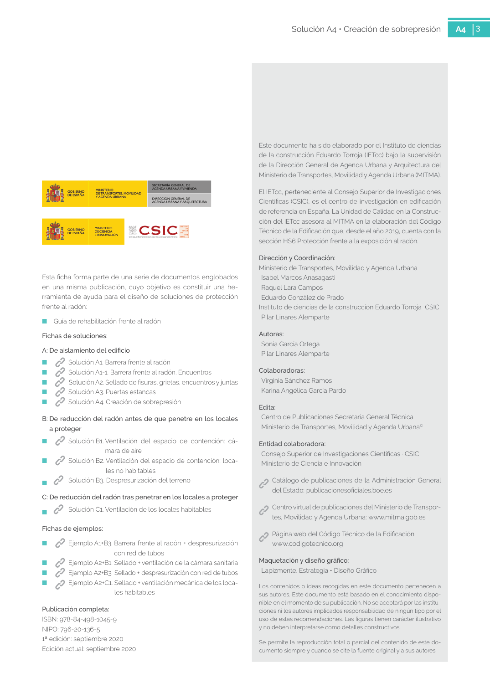

GUIA · Riesgo de condensaciones intersticiales · versión sin-fecha · capa guia
Formatos: JSON compacto · Markdown · PDF fuente
Ámbito del documento · texto del ámbito · documento y tablas
Tipo: tablas, figuras · nivel 3 · sección estimada: 6. PUNTOS CRÍTICOS Falta de estanqueidad del cerramiento · padre: a0010
Riesgo de condensaciones intersticiales intersticiales El empleo de sobrepresión en viviendas no está recomendado a priori puesto que existe riesgo de condensaciones intersticiales especialmente en épocas frías, debido a que el aire más caliente y con más humedad absoluta del interior de la vivienda es empujado hacia el exterior. 3 Solución A4 • Creación de sobrepresión A4 3 Este documento ha sido elaborado por el Instituto de ciencias de la construcción Eduardo Torroja (IETcc) bajo la supervisión de la Dirección General de Agenda Urbana y Arquitectura del Ministerio de Transportes, Movilidad y Agenda Urbana (MITMA). El IETcc, perteneciente al Consejo Superior de Investigaciones Científicas (CSIC), es el centro de investigación en edificación de referencia en España. La Unidad de Calidad en la Construc ción del IETcc asesora al MITMA en la elaboración del Código Técnico de la Edificación que, desde el año 2019, cuenta con la

PDF fuente redistribuible: copia fiel enlazada en esta página (SHA256 verificado).